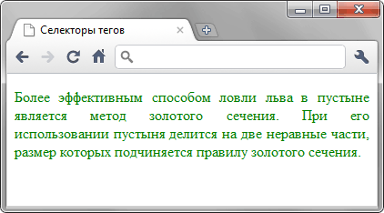

Селекторы тегов
В качестве селектора может выступать любой элемент HTML, для которого определяются правила форматирования, такие как: цвет, фон, размер и др.
Синтаксис
E { Описание правил стиля }Здесь E имя произвольного элемента. Следует понимать, что хотя правила стиля можно применить к любому элементу, результат будет заметен только для элементов, которые непосредственно отображаются в контейнере <body>.
Пример
<!DOCTYPE html>
<html>
<head>
<meta charset="utf-8">
<title>Селекторы тегов</title>
<style>
p {
text-align: justify; /* Выравнивание по ширине */
color: green; /* Зелёный цвет текста */
}
</style>
</head>
<body>
<p>Более эффективным способом ловли льва в пустыне
является метод золотого сечения. При его использовании пустыня делится
на две неравные части, размер которых подчиняется правилу золотого
сечения.</p>
</body>
</html>В данном примере изменяется цвет текста и выравнивание текста абзаца. Стиль будет применяться только к тексту, который располагается внутри контейнера <p> (рис. 1).

Рис. 1. Применение стиля к селектору p
Спецификация
| Спецификация | Статус |
|---|---|
| CSS Selectors Level 3 | Рекомендация |
| CSS 2.1 | Рекомендация |
| CSS 1 | Рекомендация |
Браузеры
| Internet Explorer | Chrome | Opera | Safari | Firefox |
| 3.5 | 1 | 3.5 | 1 | 1 |
| Android | Firefox Mobile | Opera Mobile | Safari Mobile |
| 1 | 1 | 4 | 1 |